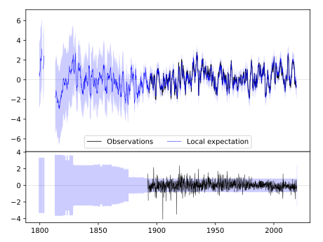
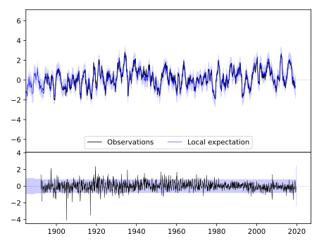
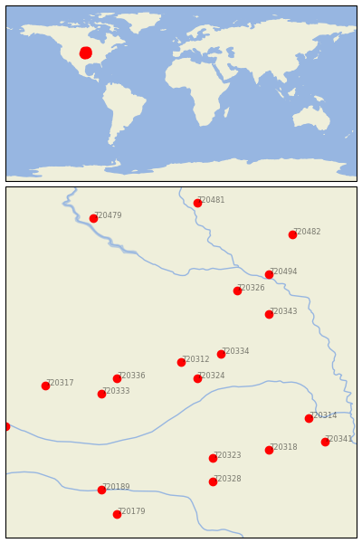

ALBION [USA]


| Neighbour | Name | Country | Distance | Lon/Lat | Years |
|---|
| 720312 | ALBION | USA | 0 | -98.0, 41.7 | 1892-2019 |
| 720324 | GENOA 2 W | USA | 27 | -97.8, 41.5 | 1875-2019 |
| 720334 | MADISON | USA | 42 | -97.5, 41.8 | 1893-2019 |
| 720336 | NORTH LOUP | USA | 70 | -98.8, 41.5 | 1888-2019 |
| 720333 | LOUP CITY | USA | 94 | -99.0, 41.3 | 1893-2019 |
| 720343 | WAKEFIELD | USA | 112 | -96.9, 42.3 | 1893-2019 |
| 720326 | HARTINGTON | USA | 115 | -97.3, 42.6 | 1891-2019 |
| 720323 | GENEVA | USA | 137 | -97.6, 40.5 | 1886-2019 |
| 720317 | BROKEN BOW 2 W | USA | 145 | -99.7, 41.4 | 1893-2019 |
| 720494 | VERMILLION 2 SE | USA | 152 | -96.9, 42.8 | 1884-2019 |
| 720318 | CRETE | USA | 153 | -96.9, 40.6 | 1882-2019 |
| 720314 | ASHLAND NO 2 | USA | 154 | -96.4, 41.0 | 1888-2019 |
| 720328 | HEBRON | USA | 170 | -97.6, 40.2 | 1886-2019 |
| 720341 | SYRACUSE | USA | 187 | -96.2, 40.7 | 1871-2019 |
| 720189 | FRANKLIN | USA | 196 | -99.0, 40.1 | 1890-2019 |
| 720325 | GOTHENBURG | USA | 204 | -100.2, 40.9 | 1893-2019 |
| 720482 | CANTON | USA | 211 | -96.6, 43.3 | 1893-2019 |
| 720479 | ACADEMY 2NE | USA | 219 | -99.1, 43.5 | 1893-2019 |
| 720179 | SMITH CTR | USA | 221 | -98.8, 39.8 | 1888-2019 |
| 720481 | ALEXANDRIA | USA | 222 | -97.8, 43.7 | 1882-2019 |